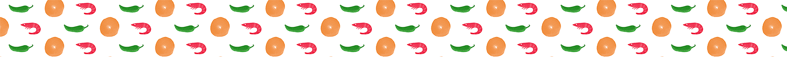
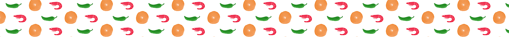

Founded in 1985, Mr James and Gina Rajan began their food journey selling their signature vadai, and other snacks from door to door of their residential estate
In 1987, Gina’s opened its first stall at Geylang Bahru. The couple only sold their vadai in the afternoon after the main tenant’s breakfast shift. But word had spread amongst the locals quickly, and Singaporeans all over travelled to savour their freshly fried Vadai.
Often, customers expressed that the couples unique yet traditional take on vadai was "nostalgic", and in time, had them affectionately known as the ‘Geylang Bahru Vadai’.
Our Journey.
By the mid 90’s, Gina’s had hatched several twist to their recipe, Yes! Gina's were the 1st to originally discover and release flavours such as, Tofu, Cheese, Crab-Stick, Ikan Bilis, and more! - This lead the couple to be discovered by countless event organizers and caterers; frying their perfect vadai around the country and outdoors!
The fragrance of their vadai then began to circulate the air of Takashimaya, and Suntec City. This time, customers were calling Gina's ‘The Best In Town’
Needless to say, their adventurous approach to the traditional
deep-fried snack had caught the attention of the press & media. -
Being featured on newspapers and food programmes had given the
vadai couple a priceless recognition; becoming
‘Singapore’s Most Famous Vadai’.

 
